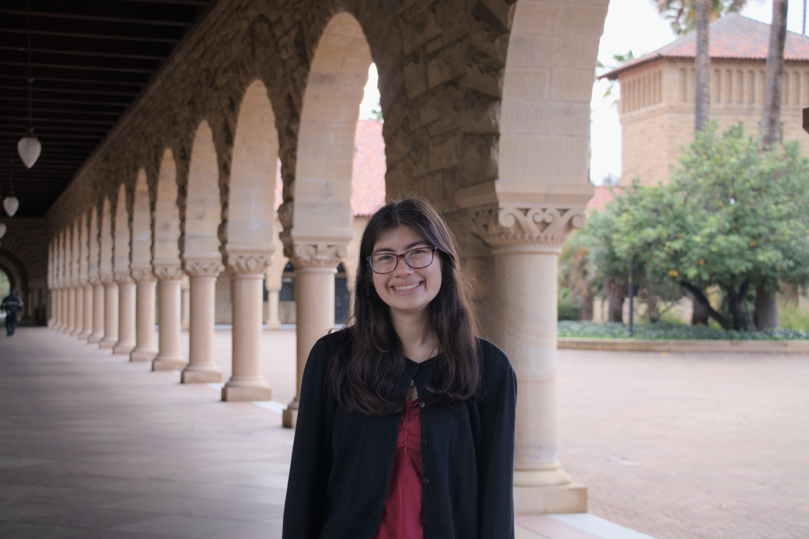
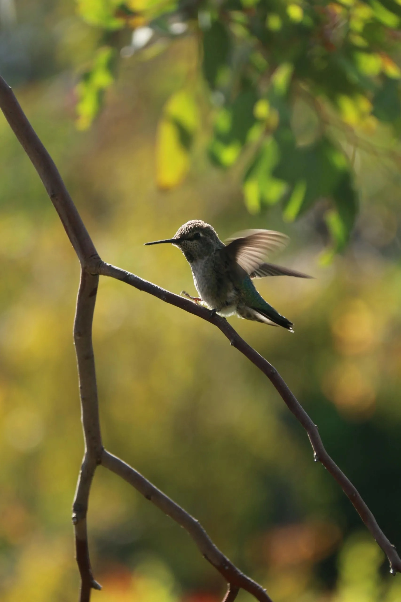
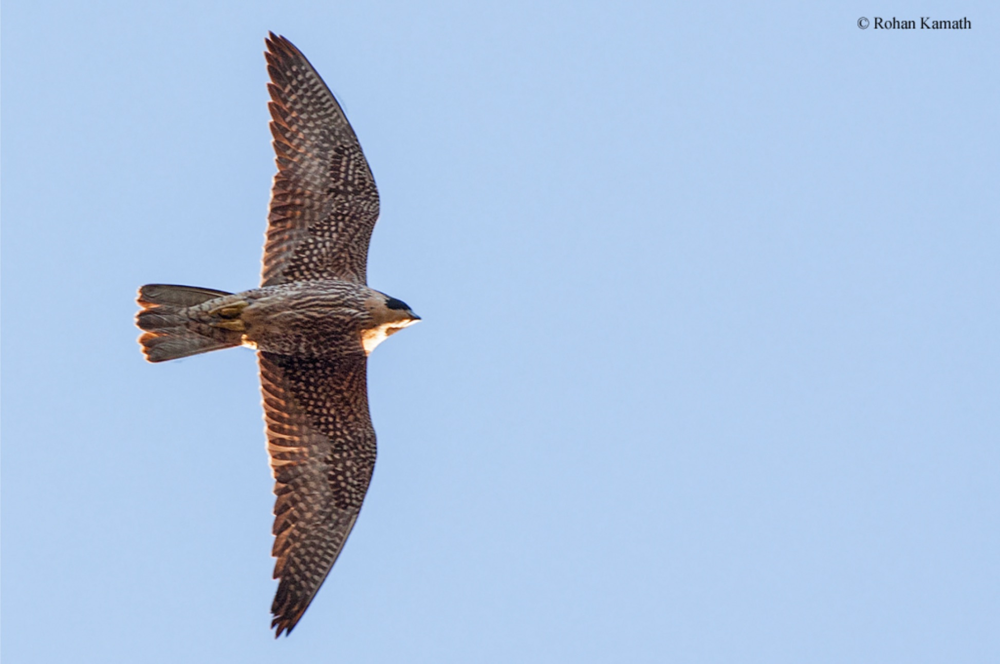
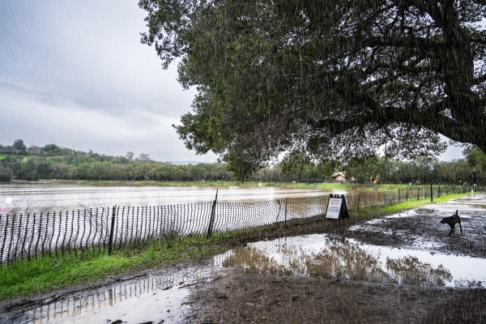

Allie Skalnik Portfolio

Science Writer
My Written Work

After nearly 30 years, is cleanup of the Hunters Point Shipyard almost, finally ending?

Meet the man crawling across Bayview mudflats at 5 a.m. — for science

A new boatbuilding school is getting Bayview teens on board

Is Parcel G at the Hunters Point Shipyard as safe as Mount Rushmore?

Meet Liam O’Brien: The former Broadway star is here to crush butterfly misogyny

This project isn’t just shoring up Bayview’s coastline, it’s making jobs

Stanford community reacts to DEI rollbacks

‘Present the science in a helpful way’: Jeff Dukes tackles climate change in conservative states

Tessier-Lavigne leads new AI biopharma startup

Feather report: Researchers develop link between birds and dinosaurs

Inside the secret lives of Hoover Tower’s peregrine falcons

A rainy winter doesn’t mean California is out of the woods yet for wildfire season

'Doomsday glacier': Should we be scared?

Stanford labs received over $651M in NIH funding last year. Some researchers say that still isn’t enough.